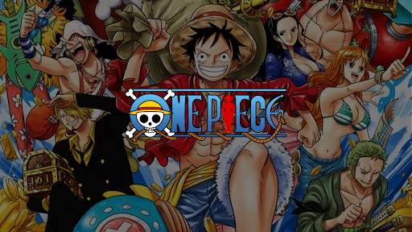

About the Fandom

What is One Piece?
One Piece is a Japanese manga and anime series created by Eiichiro Oda. It follows Monkey D. Luffy and his crew as they search for the ultimate treasure, the One Piece, to become the Pirate King.

The Straw Hat Crew
The Straw Hat Pirates are a diverse group of friends and adventurers, each with their own dreams and unique abilities, united under Luffy's leadership.

The Fandom
One Piece has one of the largest and most passionate fandoms in the world, known for its creativity, theories, fan art, and global community spirit.